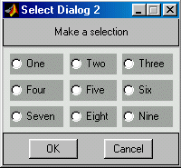
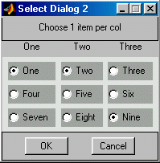

| User Function Reference |
|
Generate a scrolled matrix selection dialog.
Syntax
Choice = selectdlg2(Itemlist) Choice = selectdlg2(Itemlist, Prompt) Choice = selectdlg2(Itemlist, Prompt, Mode) Choice = selectdlg2(Itemlist, Prompt, Mode, Default)
Description
selectdlg2 displays an array of radio buttons in a
fixed size figure window. The calling process is stopped to await the
user selection. The buttons selected by the user are returned as
Choice, a c-by-2 index into the Itemlist cell array.
[] is returned if no selection is made, or the dialog is cancelled or closed.
Choice = selectdlg2(Itemlist)
Itemlist is a string cell array containing:
a string cell vector of row titles (optional)
a string cell vector of column titles (optional)
a string cell array of m-by-n choice item names
or just an array of m-by-n choice item names.
Choice = selectdlg2(Itemlist, Prompt)
Prompt is a prompt string displayed at the top of the slection array.
Choice = selectdlg2(Itemlist, Prompt, Mode)
Mode is selection mode - 0 for mutiple (default) or 1 for single -
if scalar, it applies to whole (Mode=1 allows only a single button)
if vector, Mode applies for each row/column (ones(1,n) for 1 button per col).
Choice = selectdlg2(Itemlist, Prompt, Mode, Default)
Default is a d-by-2 vector of indexes to the buttons initially selected.
Examples
Example 1. Make a simple selection.
%Create a simple selection of numbers items={'One','Two','Three';'Four','Five','Six';'Seven','Eight','Nine'}; sel = selectdlg2(items); items(sub2ind([3,3],sel(:,1),sel(:,2)))
Example 2. Choosing one item per column.
sel = selectdlg2({items(1,:),items},'Choose 1 item per col',ones(1,3)); items(sub2ind([3,3],sel(:,1),sel(:,2)))
See Also
menu,
selectdlg,
selectdlg3,
listdlg,
listdlg2
|
|
selectdlg | selectdlg3 |
|